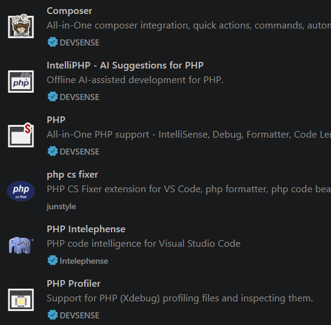

PRÁCTICA GUIADA 01: CONFIGURACIÓN DE VS CODE PARA DESARROLLO EN PHP
PASO 1: LOCALIZACIÓN DEL BINARIO DE PHP (10 MIN)
Antes de configurar el editor, debes conocer la ruta exacta donde está instalado el ejecutable de PHP en tu sistema operativo.
- Abre la terminal de tu sistema y ejecuta:
En Linux / macOS:
which php
where php
Ruta habitual
La ruta habitual en nuestro caso, ya que usamos Lerd/Herd con la versión 8.4 de PHP, es C:\Users\usuario\.config\herd\bin\php84\php.exe, donde usuario es tu nombre de usuario de Windows.
[LIBRETA]Anota en tu cuaderno de clase la ruta exacta que te ha devuelto la terminal.
4. PASO 2: EXTENSIONES IMPRESCINDIBLES (20 MIN)
Abre la pestaña de extensiones en VS Code (Ctrl + Shift + X o Cmd + Shift + X) e instala las siguientes extensiones:
-
PHP Intelephense (por Ben Mewburn): Función: El motor de Inteligencia de Código más potente para PHP. Proporciona autocompletado, navegación a definiciones (
F12), verificación de tipos y detección de errores sintácticos en tiempo real. -
PHP Debug (por Xdebug): Función: Permite pausar la ejecución del código con puntos de interrupción (breakpoints) para inspeccionar variables.
-
PHP CS Fixer (por junstyle): Función: Formatea el código PHP automáticamente según los estándares internacionales de codificación (PSR-12).
-
PHP (por devsense): Función: Proporciona una serie de herramientas para PHP.
Una vez instaladas, verifica que aparecen en la lista de extensiones:

5. PASO 3: CONFIGURACIÓN DE settings.json (15 MIN)
Accede a la configuración avanzada de VS Code presionado Ctrl + Shift + P (o Cmd + Shift + P), escribe Preferences: Open User Settings (JSON) y pulsa Enter.
Añade las siguientes claves de configuración en tu archivo settings.json:
{
// 1. Ruta al ejecutable de PHP para validación de errores
"php.validate.executablePath": "Users/usuario/.config/herd/bin/php84/php.exe",
// 2. Desactivar el autocompletado nativo básico para evitar duplicados con Intelephense
"php.suggest.basic": false,
// 3. Configuración específica para archivos PHP
"[php]": {
"editor.defaultFormatter": "bmewburn.vscode-intelephense-client",
"editor.formatOnSave": true,
"editor.tabSize": 4,
"editor.insertSpaces": true
},
// 4. Versión objetivo de PHP para Intelephense
"intelephense.environment.phpVersion": "8.4",
// 5. Configuración de formateo PSR-12
"php-cs-fixer.rules": "@PSR12"
}
Atención:
Reemplaza la ruta de la primera línea por la ruta real anotada en el Paso 1.